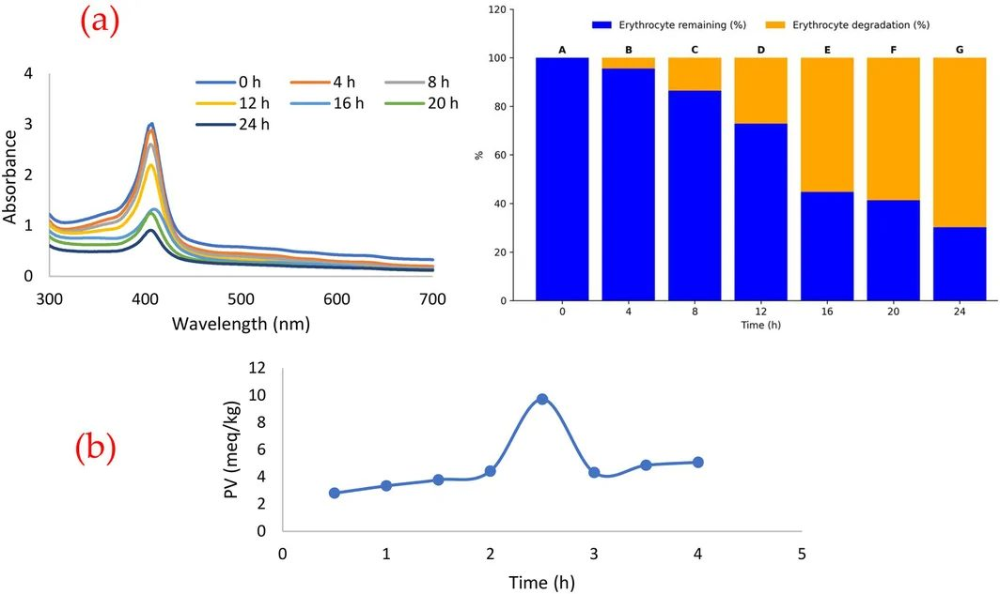
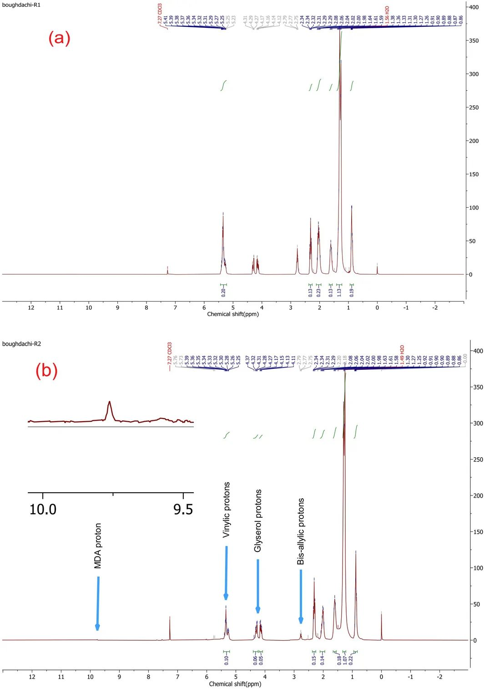
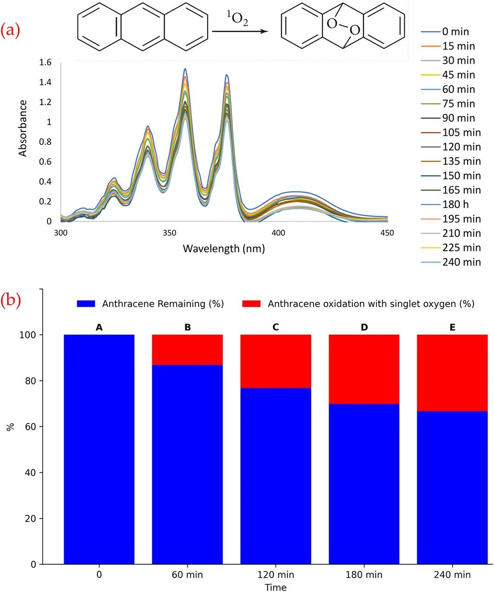
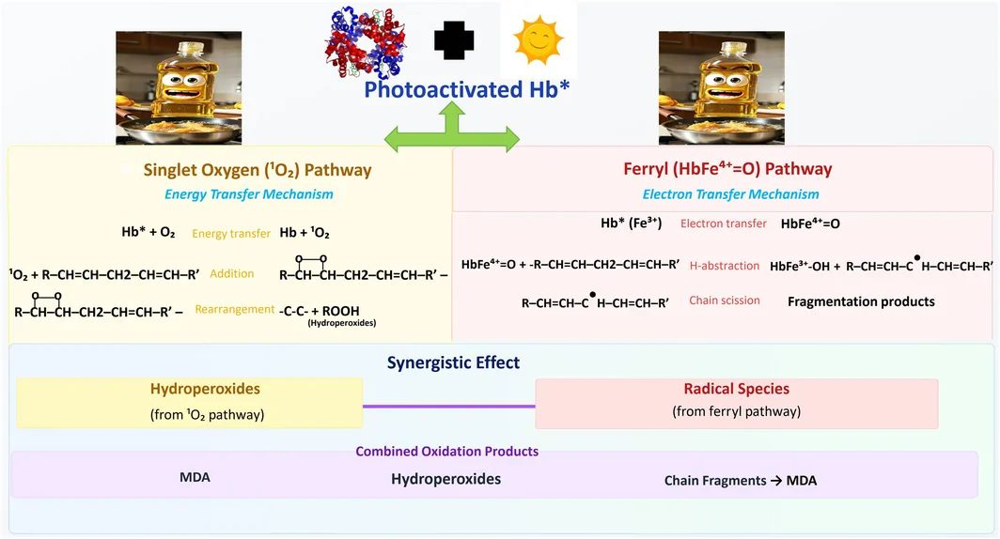

Мясо в масле на свету портит жир быстрее, чем кажется


Присутствие даже малейших следов гемоглобина делает растительное масло крайне уязвимым к солнечному свету. В модельной водной эмульсии с каноловым маслом комплекс белка крови и видимого света запустил бурное перекисное окисление всего за 2,5 часа. Исследователи доказали, что разрушение жирных кислот идет сразу двумя путями — через синглетный кислород и свободные радикалы. Это явление критично для маринадов и открывает новые способы очистки жирных промышленных стоков.
Главное
- Свет и гемоглобин разогнали перекисное число масла до 9,7 мэкв/кг за 2,5 часа
- Разрушено более 30% ненасыщенных связей с образованием альдегида МДА
- Окисление тормозится антиоксидантом BHT и гасителем синглетного кислорода
Подробнее
В эксперименте эмульсию канолового масла (2% v/v) и суспензии эритроцитов бараньей крови с концентрацией белка около 1,0 мг/мл облучали симулятором солнечного света (380–780 нм, освещенность 59 660 лк) при 25 °C с непрерывной продувкой воздухом. Всего за 2,5 часа перекисное число (ПЧ) подскочило со следовых значений до 9,7 мэкв O2/кг, в то время как в темноте или без гемоглобина окисление оставалось минимальным. Под действием натурального солнечного света интенсивностью 61 200 лк перекисное число достигло 10,5 мэкв O2/кг.
Ядерный магнитный резонанс (1H ЯМР) после 6 часов облучения показал падение доли винильных протонов на 31,2% и бис-аллильных протонов на 36,9%, что свидетельствует о массовом распаде ненасыщенных жирных кислот. Одновременно зафиксирован сигнал при 9,5 ppm, подтверждающий образование малонового диальдегида (МДА) — токсичного маркера глубокой порчи липидов. Добавление антиоксиданта бутилгидрокситолуола (BHT, 0,0016 ммоль) снизило перекисное число до 3,8 мэкв O2/кг, а ловушки синглетного кислорода азида натрия (NaN3) — до 3,1 мэкв O2/кг, подтвердив двойную природу реакции.
Ограничения
Исследование выполнено на водной эмульсии с растворителем ацетонитрилом (9:1), что не отражает поведение безводного чистого масла или сложных многокомпонентных соусов.
Полный перевод статьи
Резюме
Окисление и фотоокисление липидов признаны ключевыми факторами, влияющими на качество, питательную ценность и срок годности пищевых масел и других жиросодержащих продуктов питания. Окислительная порча липидов приводит к образованию гидропероксидов, альдегидов и других вторичных продуктов окисления, которые отрицательно сказываются на вкусоароматических свойствах, безопасности и потребительской приемлемости. Среди данных маркеров окисления перекисное число (ПЧ) и накопление малонового диальдегида (МДА) общепризнаны в качестве ключевых индикаторов первичной и глубокой стадий перекисного окисления липидов в пищевых системах соответственно. Поскольку фотоокисление представляет собой один из основных путей окислительной деструкции, понимание его механизмов необходимо для разработки эффективных стратегий повышения стабильности продуктов, оптимизации условий их хранения и совершенствования технологических процессов.
Помимо окисления при хранении, переработка растительных масел и пищевое производство сопровождаются образованием сточных вод с высоким содержанием липидов, что создает серьезные экологические и технологические трудности. Традиционные методы очистки на основе окисления, такие как озонирование и процессы Фентона, позволяют эффективно разрушать органические загрязнители, однако они часто требуют применения агрессивных химических окислителей и энергоемких условий ведения процесса. В связи с этим растет интерес к экологически устойчивым технологиям на основе действия света, в которых используются природные биомолекулы.
Гемоглобин — железосодержащий гемопротеин, в больших количествах присутствующий в тканях животных и побочных продуктах убоя скота, — традиционно известен своей функцией транспорта кислорода в мышечной ткани. Вместе с тем гемопротеины признаны важными медиаторами окисления липидов в мясе и других пищевых матрицах. Простетическая группа гема, представляющая собой порфириновую структуру с атомом железа в центре, способна участвовать в окислительно-восстановительных реакциях, инициирующих образование и распространение липидных радикалов. При воздействии света гемовые системы могут дополнительно генерировать активные формы кислорода, включая синглетный кислород, тем самым ускоряя окислительные процессы. Предшествующие исследования показали, что системы на основе порфиринов и гемоглобина способны катализировать аэробное фотоокисление жирных кислот и липидов под действием видимого света.
Опираясь на эти предпосылки, авторы настоящей работы поставили цель выяснить механизм индуцированного солнечным светом окисления липидов, опосредованного гемоглобином эритроцитов, в водной модельной системе пищевого масла. Научная новизна исследования заключается в применении структурно интактного гемоглобина эритроцитарного происхождения в качестве нативного фотосенсибилизатора на границе раздела фаз «вода — масло» при солнечном облучении, что связывает теоретическую фотохимию с биомиметическими условиями. Работа объединяет пути с участием синглетного кислорода и радикальные/гемовые реакции в единой нативной системе под действием видимого света, позволяя оценить их суммарный вклад в деструкцию липидов. Помимо углубления фундаментальных представлений о механизме фотоокисления с участием гемоглобина, данное исследование формирует основу для использования белков крови в качестве недорогих и доступных природных фотосенсибилизаторов при очистке маслосодержащих сточных вод пищевых производств. На основании тестов с перехватчиками радикалов и спектроскопических анализов предложен двойной окислительный механизм действия гемоглобина, включающий (i) генерацию синглетного кислорода за счет передачи энергии и (ii) предположительный радикальный путь с участием железа гема. Совместное действие этих процессов приводит к существенной деградации ненасыщенных жирных кислот в мягких условиях.
Важно
> Интактный гемоглобин эритроцитов на свету запускает распад ненасыщенных жиров через синглетный кислород и радикальные пути, что делает его перспективным природным агентом для очистки маслосодержащих стоков пищепрома.
Бенгальский розовый, антрацен, бутилгидрокситолуол (BHT), KMnO₄, NaN₃, ацетонитрил (CH₃CN), этанол (EtOH), ацетон ((CH₃)₂CO), метанол (MeOH) и диметилсульфоксид (ДМСО) были приобретены у компаний Fluka и Merck и использовались в исходном виде без дополнительной очистки. Коммерческое пищевое рапсовое масло (марка Oila) приобретено на местном рынке и использовалось без очистки.
Мембраны эритроцитов получали по стандартному методу Доджа. Дефибринированную кровь овец приобретали у компании Kimiakavoshazma Company (Иран). По прибытии образцы хранили при 4°C и использовали в течение 48 часов. Цельную кровь центрифугировали при 3000 об/мин в течение 10 минут при 4°C для отделения эритроцитарной фракции от плазмы. Отобранные эритроциты трижды промывали фосфатно-солевым буфером (PBS; 10 мМ, pH 7,4), после чего ресуспендировали в фосфатном буфере (10 мМ, pH 7,4). Концентрацию белка в суспензии доводили приблизительно до 1,0 мг/мл; для всех экспериментов готовили свежие суспензии. Концентрацию гемоглобина нормализовали перед каждым опытом выравниванием содержания белка во всех пробах фосфатным буфером (10 мМ, pH 7,4).
Пояснение
> Полоса Соре — интенсивная полоса поглощения в синей области спектра (~407 нм), характерная для порфириновых структур гема; ее оптическая плотность напрямую отражает концентрацию и целостность молекулы гемоглобина.
Концентрацию гемоглобина спектрофотометрически верифицировали по полосе поглощения Соре перед началом измерений на УФ-видимом спектрофотометре Shimadzu (UV-2100) при длине волны 407 нм.
Раствор, содержащий пищевое масло (2 × 10⁻² об./об.) и суспензию эритроцитов (2 × 10⁻² об./об.), облучали с помощью солнечного симулятора, оснащенного 276 светодиодными лампами (1 Вт, 2,3 В; 380–780 нм; 59 660 лк; 8,74 мВт/см²), в течение 2,5 ч при температуре 25°C и атмосферном давлении в водно-ацетонитрильной системе (9:1 по объему). В процессе облучения через стеклянный барботер в реакционную смесь непрерывно нагнетали воздух для поддержания аэробных условий с примерной объемной скоростью 50 мл/мин при постоянном магнитном перемешивании. Контрольные эксперименты проводили в темноте и без добавления гемоглобина. Отбор проб осуществляли через фиксированные временные интервалы. Перекисные числа определяли иодометрическим методом и выражали в мэкв O₂/кг масла. Правильность работы прибора подтверждали растворами пероксидов. Деградацию эритроцитов отслеживали при 407 нм. Спектры поглощения регистрировали в кварцевых кюветах с длиной оптического пути 1 см в диапазоне 200–800 нм с разрешением 1 нм относительно смеси растворителей.
Для спектроскопии ¹H ЯМР смесь пищевого масла (2 × 10⁻² об./об.) и эритроцитов (2 × 10⁻² об./об.) облучали в аналогичных условиях в течение 6 ч. Спектры снимали на спектрометре Bruker AMX (300 МГц) при 25°C (внутренний стандарт — тетраметилсилан, ТМС; 32 накопления, задержка релаксации 1 с). Сигналы альдегидных протонов в диапазоне δ 9,4–9,6 м.д. служили доказательством образования МДА.
Для теста обесцвечивания антрацена смесь антрацена (4 × 10⁻⁴ М), масла (2 × 10⁻² об./об.) и эритроцитов (2 × 10⁻² об./об.) облучали 4 ч и анализировали при 375 нм. Влияние растворителей изучали в водно-органических смесях (9:1 об./об.) в течение 2,5 ч. Сравнение со стандартными окислителями проводили параллельно с раствором бенгальского розового (1 × 10⁻⁴ М) на свету и KMnO₄ (1 × 10⁻⁴ М) в темноте.
Все эксперименты проводили в трех независимых повторностях (n = 3). Данные выражали как среднее ± стандартное отклонение (SD). Статистическую обработку выполняли методом однофакторного дисперсионного анализа (ANOVA) с апостериорным тестом Данкана в пакете SAS 9.4 при критическом уровне значимости p < 0,05.
Эритроциты были использованы как естественная гемоглобинсодержащая система, формирующая биосовместимую среду для фотосенсибилизации. Применение интактных или лизированных клеток позволяет сохранить природную конформацию и редокс-свойства белка при облучении (Рис. 1a). После 24 ч имитации солнечного освещения смесь масла и эритроцитов продемонстрировала снижение мутности и интенсивности желтой окраски. По данным УФ-видимой спектроскопии интенсивность полосы Соре снизилась на 69,8%, что указывает на глубокую фотохимическую трансформацию хромофора гемоглобина (Рис. 1a).
Контрольные пробы в темноте, без гемоглобина и при дефиците кислорода показали следовые уровни окисления (Таблица 1, строки 1–4). Схожесть спектров светодиодного симулятора и реального солнечного света подтвердила технологическую применимость системы в естественных условиях (Таблица 1, строка 5). Введение BHT как тушителя свободных радикалов снизило ПЧ с 9,7 до 3,8 мэкв O₂/кг (Таблица 1, строка 6). Ловушка синглетного кислорода NaN₃ уменьшила этот показатель до 3,1 мэкв O₂/кг (Таблица 1, строка 7).
Важно
> Для глубокого окисления масла строго необходимо одновременное наличие гемоглобина, света и кислорода: ПЧ достигает максимума 9,7 мэкв O₂/кг за 2,5 часа, тогда как без белка или в темноте реакция практически не идет.
Таблица 1. Фотоокисление пищевого масла эритроцитарной системой гемоглобина в различных условиях реакции.
/ Номер / Условия реакции / ПЧ (мэкв O₂/кг) / / :--- / :--- / :--- / / 1 / Пищевое масло + эритроциты + воздух + видимый свет / 9,7 / / 2 / Пищевое масло + воздух + видимый свет / Следы / / 3 / Пищевое масло + эритроциты + воздух / Следы / / 4 / Пищевое масло + эритроциты + видимый свет / Следы / / 5 / Пищевое масло + эритроциты + воздух + солнечный свет / 10,5 / / 6 / Пищевое масло + эритроциты + воздух + видимый свет + BHT / 3,8 / / 7 / Пищевое масло + эритроциты + воздух + видимый свет + NaN₃ / 3,1 /
Как видно из Рис. 1b, перекисное число непрерывно нарастало на протяжении первых 2,5 ч облучения, достигнув 9,7 мэкв O₂/кг, после чего незначительно снизилось вследствие деструкции первичных гидропероксидов во вторичные продукты.
Анализ методом ¹H ЯМР выявил изменения в жирнокислотном профиле масла под действием света в присутствии гемоглобина (Рис. 2). Сигналы винильных протонов (δ 5,2–5,4 м.д.), чувствительных к еновым реакциям под действием ¹O₂, уменьшились на 31,2%, тогда как сигналы бисаллильных протонов (δ 2,7–2,8 м.д.) снизились на 36,9%. Более выраженная убыль бисаллильных протонов согласуется с реакциями отрыва водорода, характерными для радикального пути с возможным участием феррильных интермедиатов гема. Появление резонансного сигнала при δ 9,5 м.д. (Рис. 2b) подтвердило образование малонового диальдегида (МДА).


Прямая оценка образования синглетного кислорода с использованием антрацена в качестве зонда показала падение полосы поглощения при 375 нм на 33% за 4 ч облучения (Рис. 3), что вызвано формированием эндопероксида. Добавление NaN₃ подавляло этот процесс, доказывая преимущественный вклад ¹O₂ в фотообесцвечивание зонда.


Эффективность окисления масла закономерно зависела от природы полярного органического растворителя в ряду: ацетонитрил > этанол > ацетон > метанол > ДМСО (Таблица 2). Это согласуется со временем жизни ¹O₂ в среде: около 65 мкс в ацетонитриле против ~19 мкс в ДМСО. Кроме того, ДМСО способен координироваться по активному центру гема и ингибировать образование реакционноспособных феррильных форм (HbFe(IV)═O).
Таблица 2. Фотоокисление пищевого масла гемоглобином в присутствии различных растворителей.
/ Номер / Растворитель / ПЧ (мэкв O₂/кг) / / :--- / :--- / :--- / / 1 / Ацетонитрил / 9,7 / / 2 / Этанол / 8,5 / / 3 / Ацетон / 7,6 / / 4 / Метанол / 7,4 / / 5 / ДМСО / 2,6 /
По показателю ПЧ (мэкв O₂/кг) сравниваемые окислительные системы распределились следующим образом: Hb (9,7) > бенгальский розовый (6,8) > KMnO₄ (2,1). Превосходство гемоглобина обусловлено синергизмом одновременной генерации ¹O₂ и феррил-опосредованного окисления.
Результаты исследования указывают на то, что гемоглобин стимулирует перекисное окисление липидов посредством двух сопряженных путей: генерации синглетного кислорода и свободных радикалов. Участие ¹O₂ подтверждено обесцвечиванием антрацена, тушением процесса азидом натрия, корреляцией со временем жизни частицы в растворителях и избирательным расходом винильных связей. В то же время гипотеза об участии высоковалентного оксоферрильного комплекса (HbFe(IV)═O) опирается на косвенные свидетельства: ингибирование реакции фенольным антиоксидантом BHT, селективный отрыв бисаллильных протонов по данным ЯМР и падение активности в ДМСО.
Схема двойного окислительного механизма представлена на Рис. 4. Путь через ¹O₂ реализует еновые реакции по кратным связям (δ 5,2–5,4 м.д.), давая гидропероксиды. Параллельно феррил-гемовый комплекс отрывает водород от бисаллильных центров (δ 2,7–2,8 м.д.), стимулируя радикальную деструкцию углеродных цепей с выходом вторичных продуктов, включая МДА. Помимо этого, в спектрах ЯМР зарегистрировано изменение сигналов протонов глицеринового фрагмента при ~4,10 м.д., что свидетельствует о разрыве сложноэфирных связей -CH₂-O-CO- в триглицеридах в результате радикального β-распада. Молекулы синглетного кислорода непосредственно расщеплять сложноэфирные связи не способны.


С экологической точки зрения гемоглобин представляет собой биоразлагаемый белок, массово получаемый в качестве побочного продукта мясной промышленности. Применение отходов переработки убоя в циркулярной экономике позволяет проводить деструкцию липидов в сточных водах под действием солнечного света без внесения синтетических реагентов.
Осторожно
> Исследование выполнено на чистом модельном рапсовом масле в лабораторном реакторе; на реальных сточных водах предприятий эффективность системы пока не проверялась, а наличие феррильных форм железа требует прямого подтверждения.
К ограничениям работы относятся использование упрощенной модельной системы «вода — масло» вместо реальных промышленных стоков со сложным химическим составом, отсутствие данных о стабильности структуры белка при длительном облучении, а также нерешенные инженерные вопросы масштабирования (проникновение света, аэрация и регенерация белка). Кроме того, образование интермедиата феррила железа показано косвенно и требует прямого спектроскопического доказательства.
В работе детально раскрыт механизм фотоокисления липидов под действием солнечного света, катализируемого эритроцитарным гемоглобином. Совокупность данных подтверждает параллельное протекание реакций синглетного кислорода и радикальных стадий, приводящих к окислению двойных связей, отрыву водорода от бисаллильных звеньев, гидролизу эфирных связей триглицеридов и формированию МДА. Полученные результаты открывают путь к использованию дешевых белков крови из отходов мясной индустрии в качестве возобновляемых фотокатализаторов для обезвреживания жиросодержащих технологических стоков пищевых производств. Будущие исследования должны быть сфокусированы на технологиях иммобилизации и стабилизации белка для создания масштабируемых систем солнечной водоочистки.
Схема исследования
Статья опубликована в рецензируемом журнале Food science & nutrition. Но и опубликованный результат — одно исследование, а не окончательный вывод.
Источник
| Источник | Категория | Лицензия |
|---|---|---|
| Food science & nutrition (Europe PMC) | shelf_life | CC BY 4.0 |
Источники
| Источник | Ссылка |
|---|---|
| Страница статьи | europepmc.org |
| Полный текст (PDF) | europepmc.org |
| DOI | doi.org |
| Метаданные Crossref | api.crossref.org |
| Europe PMC | europepmc.org |
| Иллюстрация | commons.wikimedia.org |